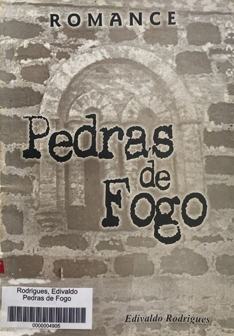

<style>
    section {
        display: flex;
        flex-direction: row;
        align-items: center;
        justify-content: center;
        gap: 40px;
        margin: 40px 0;
    }


    .conteudo {
        max-width: 1000px;
        font-family: Arial, sans-serif;
        font-size: 16px;
        line-height: 1.6;
        color: #333;
        text-align: justify;
    }

    .conteudo p {

        margin-bottom: 16px;
    }

    img {
        width: 300px;
        height: auto;
        border-radius: 8px;
    }
</style>
<section>


    <div class="conteudo">

        <h3>Pedras de Fogo</h3>

        <h5>Edivaldo Rodrigues</h5>

        <p>A obra retrata a saga dos dominicanos em Porto Nacional e desvenda os mistérios da construção da Catedral
            Nossa Senhora das Mercês. A Catedral foi idealizada pelos frades dominicanos e executada, em nove anos de
            árduo trabalho, com a colaboração.
            CECSIN：(da comunidade portuense da época.)
            A temática do livro é constituída de realidade e ficção, prevalecendo a ficção. Registra os primeiros passos
            do nascente povoado de Porto Real do Pontal, ainda no início do século XVIII, realizando com isso, uma
            viagem no tempo, precisa em detalhes e fatos históricos que determinaram a formação educacional, cultural,
            sócio-politica e até econômica de Porto Nacional.
        </p>
    </div>

    <div class="imagem">


        

    </div>

</section>